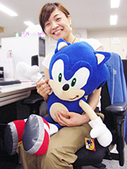

セガに入ったきっかけ、動機などを教えていただけますでしょうか？
英語関係で、ライセンス、契約とかの専門職を身に付けていきたいと思っていたら、ちょうどその時にセガでキャラクターライセンスの海外担当の募集があったため、応募をしました。入社する前は、セガは海外の会社かな？くらいな国際的なイメージが強かったですね。人々を楽しませるという意味でエンターテイメント業界というところにも興味を持ちました。
しかし、キャラクターのライセンスというのは、思っていたよりもとても奥が深く、デザイン監修や、海外のクライアントとの契約交渉など、いまだに勉強の日々です。
また、色々な人々と関わって仕事をしたいと思っていたため、社内外ともに様々な部署や会社と関わる今の仕事は、とてもやりがいがあります（笑顔）。
仕事以外の趣味も聞いていいですか？
唯一続いている趣味はやはり「旅」ですね。 大学の時にバックパッキングにはまり、それ以来、社会人になっても休みの度に旅へ出ています。
先進国よりも途上国の方が好きで、アジアやアフリカが特に好きです。途上国への旅の醍醐味は、生活だったり、習慣だったり、あらゆることが日本とは全然違うので、そういう驚きに出会うことですかね。それが楽しくて病みつきになります。
あと、現地の人々が人懐こくてのんびりしているので、日本での慌しい日常を忘れさせてくれるのもいいですね。
今まで行ったところですか？
中国・台湾・タイ・シンガポール・インドネシア・カンボジア・モンゴル・オーストラリア・ニュージーランド・イギリス・イタリア・スイス・ギリシャ・トルコ・エジプト・ケニア・南アフリカ・カナダ・アメリカ・メキシコ・キューバ、などへ訪れました。
どの国もそれぞれ違った良さがあるので、どこが一番良かったかをあげるのは難しいのですが、その中でも一番印象に残っているのは「ケニア」ですかね。
現地でジープとドライバーを調達して、サバンナへ4日間のキャンプに行きました。まず、あまりにも広大な大地に圧倒されました。夜は、目に張りついているんじゃないかと思うような大きな星を見ながら、サバンナに小さなテントを張って眠りました。夜中に食べもの目当てで近づいてきた象の襲撃にあったりもしました。キャンプの間はもちろんトイレもシャワーもないサバイバルな状況ですが、そんな部分も全部ひっくるめてケニアは最高でしたね（笑）。
今までのお仕事の中で、一番印象に残っているものは何ですか？その理由もお聞かせ下さい。
一昨年の夏に、ロサンゼルスの「ハリウッドボール」という野外コンサートホールで行われた、『VIDEO GAMES LIVE』へ参加したことでしょうかね。
『VIDEO GAMES LIVE』とは、ゲーム音楽をオーケストラで演奏するショーで、初回のハリウッドボールでの公演に始まり、全米、ヨーロッパ、南米の各地でワールドツアーをしています。ソニックの楽曲以外にも、任天堂さんやコナミさん、その他のゲーム会社の10タイトル以上の楽曲が演奏されました。
音楽と一緒に舞台の背景の巨大なスクリーンでは、タイトルの映像がながれるので、音楽と映像が合わさり、とても迫力がありました。
さらにすごいのがファンの方々ですね。1万人収容の会場がほとんどぎっしり埋めつくされて、熱狂というか、すごい盛り上がりで、びっくりしました。アメリカで販売しているソニックのＴシャツを着たり、ソニックのトゲの形をした青い帽子をかぶっているお客さんもけっこういましたよ！

最初に、オリジナルのCMでおなじみの「セ～ガ～」というフレーズに続いてソニックの音楽がスタートした時は、大興奮の拍手と歓声が沸き起こりました。
普段日本にいる時は、海外のソニックのファンの方々に直接お会いすることはできないので、そういう熱気を肌で感じることができた貴重な体験であり、とても感動しました。
ソニックシリーズの中で、一番好きなキャラクターは誰ですか？その理由も教えて下さい。
テイルスです！
ビジュアルが可愛いのもありますが、ソニックというヒーローの脇で陰ながらサポーターとしてがんばっているところが健気で好きです（笑顔）。
中村さんにとってソニックとは？
今となっては日常の一部ですかね。毎日会わない日はないですし。
特に海外では「ソニック」と言って知らない人はほとんどいないところがスゴイと思います！
いつまでもたくさんの人に愛される、みんなのヒーローであり続けて欲しいですね。
最後に、「ソニック チャンネル」をご覧になっているみなさんに一言お願いできますでしょうか？
 いつもソニックを応援してくださってありがとうございます。
ソニックはこれからもクールに進化していくかと思いますので、今後もお見逃しのないよう、引き続き応援よろしくお願いします！